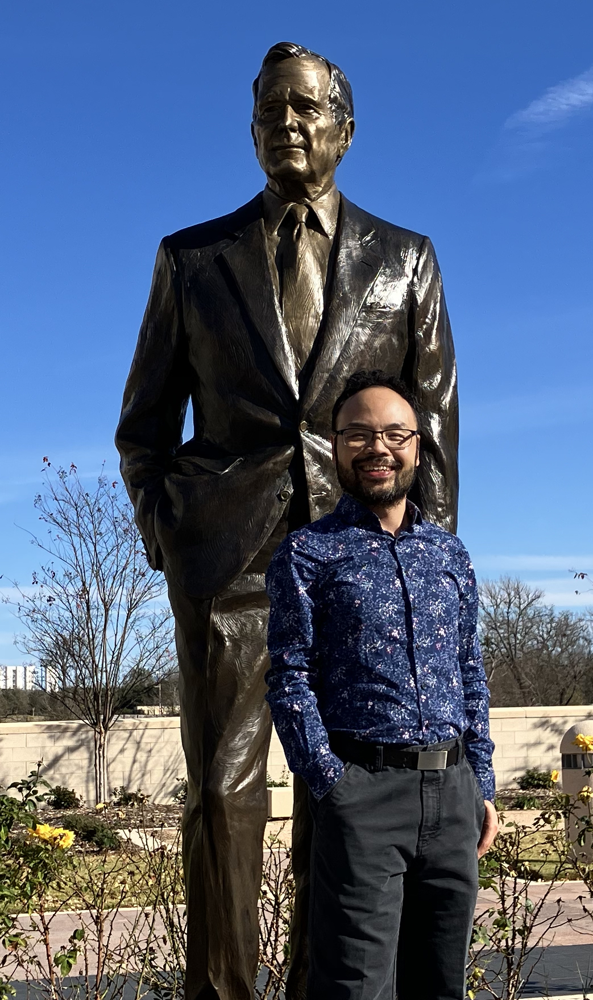

Hello! I’m Steven, a quantitative political scientist studying international political economy and international security, with a particular focus on trade, foreign aid, economic statecraft, and global governance. I earned my Ph.D. in Political Science from Texas A&M University in 2026 and currently teach political science at the University at Albany, SUNY.
My dissertation, Contesting the Liberal Order? Chinese Economic Statecraft, Alternative Institutions, and the Diffusion of Governance Norms, examines how China’s rise is reshaping international institutions, governance norms, and security relationships across Africa and the Indo-Pacific. Using quantitative methods and original data, my research investigates how economic instruments—including trade and development finance—affect diplomatic alignment, security cooperation, and the evolution of the international order.
I hold an M.A. in International Economics and China Studies, with a specialization in Economic Policy, from Johns Hopkins SAIS; an M.A. in Economics from Kyoto University; and both a B.A. in Political Science and an M.A. in International Relations from Peking University. My published work includes an article in the SAIS China Studies Review on Chinese trade retaliation in territorial disputes and an essay on multilateralism for the Bretton Woods Committee.
Before beginning my doctoral training, I spent eight years at the Foreign Affairs Committee of China’s National People’s Congress, where I supported legislative diplomacy and treaty-related affairs. This work gave me firsthand insight into how China’s legislative bureaucracy interacts with government agencies responsible for trade, technology, and national security. I also spent two years studying in Japan and two years working for a South Korean multinational corporation, experiences that deepened my understanding of the political economies and societies of East Asia.
My recent fellowships and honors include the International Policy Scholars Consortium and Network at the Henry A. Kissinger Center for Global Affairs, the Foreign Policy Impact Summer Institute at Colorado State University, the Humane Studies Fellowship, and second place in the Bretton Woods Committee’s Henry Owen Memorial Award. At the 2026 APSA Annual Meeting, I organized and presented on a panel on economic statecraft and great-power competition. My research has also received support from the Cato Institute, the Carnegie Corporation of New York, the Northeast Asia Economic Forum, the Volkswagen Foundation, and the Japan International Cooperation Agency.
For a more detailed overview of my research, teaching, and professional experience, please view my CV.